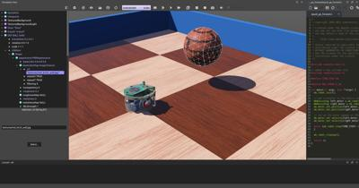
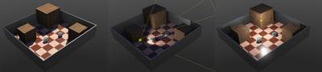
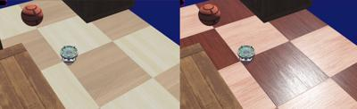

Tutorial2 <<
Previous Next >> Tutorial4
Tutorial3
教學 3：外觀
本教學的目的是讓你熟悉一些與圖形渲染相關的節點。當這些節點被適當使用時，可以很快創建出外觀良好的模擬。良好的圖形質量不僅能提升用戶體驗，對於機器人感知其環境的模擬（如攝像頭圖像處理、循線等）也是至關重要的。
本教學結束時的效果如下圖所示。

新模擬
實作 #1：創建新模擬
從上一個教程的結果中，通過使用檔案 / 另存世界... 菜單創建一個名為 "appearance.wbt" 的新模擬。
燈光
世界的燈光由燈光節點 (Light) 和背景 (Background) 決定。燈光節點有三種類型：方向燈 (DirectionalLight)、單點燈 (PointLight) 和聚光燈 (SpotLight)。方向燈模擬無限遠的光源（例如：太陽），點燈模擬從單一點發出的光（例如：燈泡），而聚光燈模擬錐形光（例如：手電筒）。下面這張圖展示了它們之間的比較。每種類型的燈光節點都可以投射陰影。你可以在參考手冊中找到它們的完整文檔。

三種在 Webots 中可能的燈光比較。左邊是方向燈 (DirectionalLight)，中間是聚光燈 (SpotLight)，右邊是點燈 (PointLight)。
在模擬中設置燈光就性能上需要耗費運算資源，會降低模擬速度（尤其是在投射陰影時）。最小化燈光數量可以提高渲染速度。單點燈 (PointLight) 比聚光燈 (SpotLight) 更高效，但比方向燈 (DirectionalLight) 效率低。
在本次模擬中，燈光節點在場景樹中不可見，因為它包含在 TexturedBackgroundLight PROTO 節點中。它由一個方向燈 (DirectionalLight) 組成，其強度和方向根據場景背景自動計算。
修改牆壁的外觀
本小節的目標是將牆壁顏色改為藍色。
形狀節點 (Shape) 的外觀 (Appearance) 和 PBR 外觀 (PBRAppearance) 節點決定了物件的圖形外觀。在其他方面，這些節點負責物件的顏色和紋理。
如以下比較所示，建議使用 PBR 外觀以獲得更好的渲染效果。

外觀節點 (Appearance) 和 PBR 外觀節點 (PBRAppearance) 的比較。左邊是外觀節點 (Appearance)，右邊是 PBR 外觀節點 (PBRAppearance)。
PBRAppearance 節點指定了一個節點的基於物理的視覺外觀。縮寫 "PBR" 指的是 "Physically-Based Rendering"（基於物理的渲染），這個術語用來表示一類基於物體物理特性的著色模型，而不是像在 Appearance 節點中使用的 Blinn-Phong BRDF 這樣的更古老的模型。
Blinn–Phong 反射模型，也稱為修改的 Phong 反射模型，是由 Jim Blinn 開發的 Phong 反射模型的修改版本。
Blinn–Phong 是一種在 OpenGL 和 Direct3D 的固定功能管線（在 Direct3D 10 和 OpenGL 3.1 之前）中使用的著色模型，並在每個頂點上進行處理，當它通過圖形管線時；頂點之間的像素值默認由 Gouraud 著色插值，而不是計算成本更高的 Phong 著色。
實作 #2：在圖形表示第一面牆的形狀節點 (Shape) 中，將 PBRAppearance 節點添加到外觀 (Appearance) 欄位。
- 使用顏色選擇器將其 baseColor 欄位設置為藍色。
- 使用欄位編輯器將其 metalness 欄位設置為 0。
- 最後，使用欄位編輯器將其 roughness 欄位設置為 0.5。
- 如果上一個教程中的 DEF-USE 機制正確實施，所有牆壁應該都會變成藍色。
添加現有的外觀到球體
Webots 發行版中提供了許多預定義的 PBRAppearance。
實作 #3：添加預定義的 PBRAppearance
選擇外觀 (appearance) 欄位並刪除之前添加的節點。要刪除此節點，可以按鍵盤上的 "delete" 鍵，或右鍵點擊該欄位並從菜單中選擇 "delete"。此欄位現在應顯示為 "appearance NULL" 而不是 "appearance PBRAppearance"。
再次雙擊該欄位，然後導航到 PROTO 節點 (Webots Projects)，再導航到 appearances，並選擇 OldSteel (PBRAppearance)。
添加硬碟中儲存的紋理
本小節的目標是將本地可用的紋理應用到球上。在滾動的物體加上紋理可更容易檢視其運動情況。
實作 #4：將本地可用的紋理添加到球體。
1. 下載這裡所提供的紋理並將其儲存到硬碟中。
2. 從外觀 (appearance) 欄位中刪除先前添加的節點，並改為添加一個 PBRAppearance 節點。
3. 向 PBRAppearance 節點的 baseColorMap 欄位添加一個 ImageTexture 節點。
4. 使用 "Add" 按鈕向 ImageTexture 的 url 欄位添加一個項目。
5. 然後使用 "Select" 按鈕設置新添加的 url 項目的值。
6. 跟隨路徑到您保存紋理的位置並選擇它。
紋理 URL 必須定義為相對於專案目錄的 worlds 目錄或相對於預設專案目錄 WEBOTS_HOME/projects/default/worlds。
在圖像查看器中打開 red_brick_wall.jpg 紋理，同時觀察它如何映射到 Webots 中的 Sphere 節點上。
紋理根據參考手冊中描述的預定義 UV 映射函數映射到幾何節點上。UV 映射函數將 2D 圖像表示映射到 3D 模型。
在設置好 Light 和 PBRAppearance 節點後的模擬。
渲染選項
Webots 在視圖菜單中提供了幾種渲染模式。
實作 #5：使用"視圖 / 線框渲染" (View / Wireframe Rendering) 表單項以線框模式查看模擬。然後還原為普通渲染模式："視圖 / 普通渲染" (View / Plain Rendering)。
其他渲染功能也很有幫助：
查看座標系統： View / Optional Rendering / Show Coordinates System 或使用 ctrl-F1
查看距離傳感器光線： View / Optional Rendering / Show DistanceSensor Rays 或使用 ctrl-F10
解決方案：世界文件
要將您的世界與解決方案進行比較，請轉到您的文件並找到在 Tutorial1中創建的名為 my_first_simulation 的文件夾，然後轉到 worlds 文件夾並使用文本編輯器打開正確的世界文件。此解決方案和其他解決方案位於解決方案目錄中。
結論
在本導引課程中，您學習了如何使用 PBRAppearance 節點和光源節點設置一個美觀的環境。
您可以通過閱讀參考手冊中這些節點的詳細描述來進一步了解此主題。此常見問題解答將為您提供有效設置這些節點的方法。
Tutorial2 <<
Previous Next >> Tutorial4